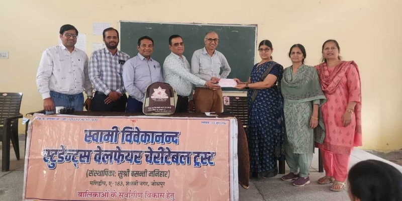
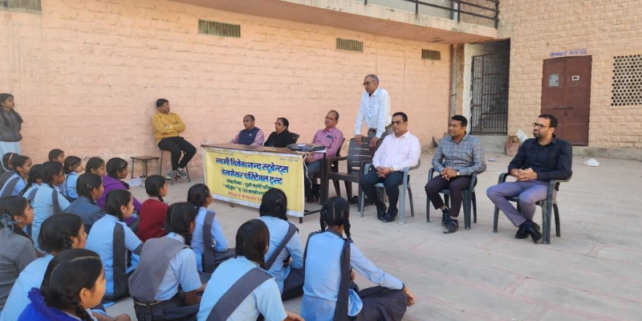

Swami Vivekanand Students’ Welfare Charitable Trust
Founded in Jodhpur by Kumari Basanti Manihar, with Shri Nandkishore Sharda as President, so that no deserving girl would be denied school education for want of funds.
Towards Universal Brotherhood, World Peace and Human Welfare — through wisdom, selfless service and the holistic development of every life we touch.
Every age searches for light. Some discover it. Some become it.
Under a special mission, Jagatjanani Maa Tripurasundari and Lord Shiva brought their beloved son, Shri Nandkishore Ji Sharda (Bhaiyaji), to give the world a simple, universal spiritual path for today's age.
Through devoted Sadhana and Maa's grace, Bhaiyaji formulated the Buddhi-Vivek Yoga Sadhana — a path rooted in wisdom, discernment and inner transformation, accessible to every seeker regardless of age, class, caste or religion.
With Maa's blessings, Bhaiyaji then guided earnest seekers — including Sushri Basanti Ji Manihar and Sushri Madhubala Ji Advani — giving rise to the Manidweep Adhyatma Parivar, lovingly known as the Maa Parivar.
Read the Complete Journey
A simple, universal path of wisdom and discernment given by Bhaiyaji — practiced every Sunday through two dedicated sessions.
Weekly knowledge sessions that build discipline, positive thinking and spiritual awareness in students supported by the Mission — shaping character alongside academics.
Open discourses for the wider community — anyone seeking a practical path toward inner peace, balance and purposeful living.
"Sunday mornings changed how I see my own studies — not as pressure, but as purpose."
"I found more clarity in one evening session than in years of searching alone."
"Buddhi-Vivek gave me a way to stay steady in a life that rarely is."
"Selfless service is the highest expression of spiritual realization."
Across every initiative of the Mission, one purpose has guided the work — helping people live with dignity, self-reliance and inner peace.
"They never asked what I could give. They only ever asked how I was."
"My daughter finished school because of them. Now she teaches others."
"I came for one Sunday session to accompany my mother. I never stopped coming."

Following Bhaiyaji's heavenly departure, Maa Basanti Ji Manihar and Madhubala Ji Advani carried his vision forward together — nurturing every scholarship, every Sunday session and every act of service with the same devotion he had shown them.
Under their combined guidance, the Mission's work steadily grew — from education into food assistance, yoga, and personality development — without ever drifting from its founding purpose.
Read Their Complete Journey
Following Maa Basanti Ji's heavenly departure in 2021, Madhubala Ji humbly assumed responsibility as President — and today leads the Mission with the same efficiency, grace and spiritual clarity that has guided it since its founding.
Under her steadfast leadership, a dedicated team of qualified, selfless professionals oversees every initiative, ensuring lifelong mentorship and support for everyone the Mission serves.
Read Her BiographyWhat began as an effort to educate deserving girls has grown into a thoughtful and evolving movement serving students, families, women and communities across multiple areas of need.
Guided by the long-term vision of Shri Nandkishore Sharda, Maa Basanti Manihar and Kumari Madhubala Advani, every initiative remains rooted in one purpose: helping individuals lead balanced, value-oriented, self-reliant, compassionate and fulfilling lives.
Through an inclusive, holistic approach, the Trust brings together education, healthcare, human values, yoga and meditation, spiritual growth, women’s empowerment, environmental awareness and social responsibility—supporting not only immediate needs, but the complete development of every individual.
Founded in Jodhpur by Kumari Basanti Manihar, with Shri Nandkishore Sharda as President, so that no deserving girl would be denied school education for want of funds.
Established as the scholarship programme matured, extending support beyond school into college and higher education for young women.
Created to support boys from economically disadvantaged families, later expanding into mentorship for Engineering, Medicine, Pharmacy, MBA and CA aspirants.
Begun during the pandemic with 50 families, the initiative grew into structured, dignity-preserving food assistance that now supports approximately 300 families.
Introduced alongside academic support to nurture the physical, mental, emotional and spiritual dimensions of a well-rounded personality.
Founded to empower women and girls from underprivileged backgrounds through free training in sewing, tailoring and garment construction.
Behind every initiative is a personal journey of growth, dignity, confidence and renewed possibility.
A snapshot of the Mission’s sustained contribution across education, family welfare, self-reliance and holistic development.
Scholarship assistance provided through the Swami Vivekanand Students’ Welfare Charitable Trust.
College and higher-education scholarships provided through the Maa Shardamani Trust.
Scholarships and mentorship supporting boys from economically disadvantaged families.
Essential food support distributed to families while preserving dignity and continuity of care.
Free vocational training in sewing, tailoring and garment construction for women and girls.
Physical, mental, spiritual and emotional development through Yoga, Pranayama, meditation and value-based guidance.
Every photograph reflects a moment of compassion, learning and spiritual awakening. Together they tell the story of a mission dedicated to serving humanity.





Whether you wish to visit the Mission, participate in our activities, volunteer your time, or simply learn more, we warmly welcome you.